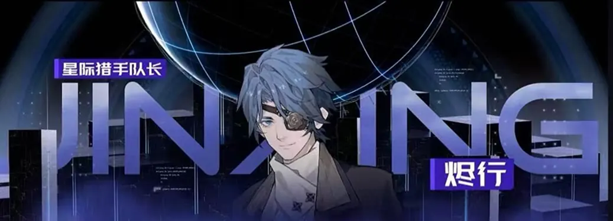
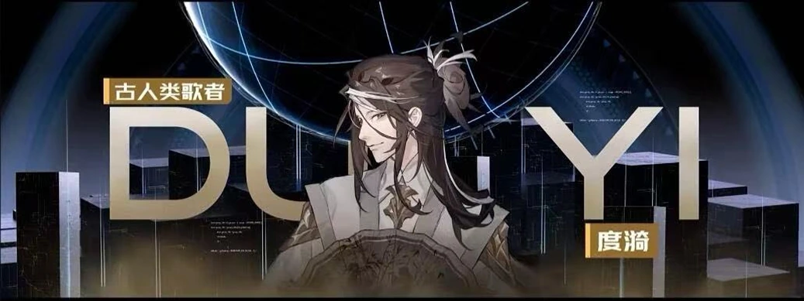
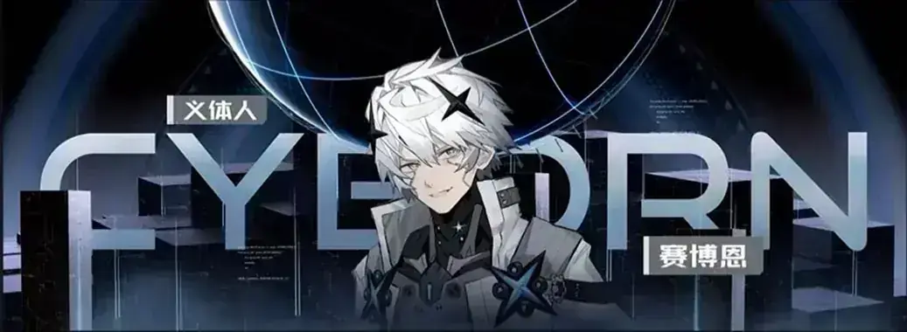
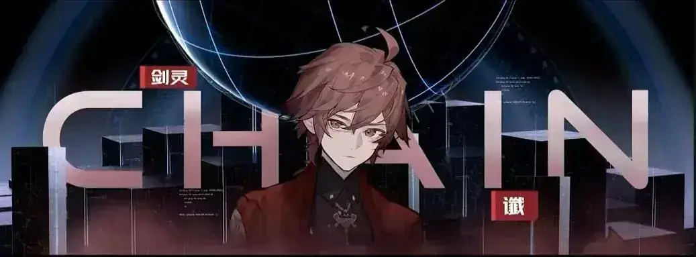
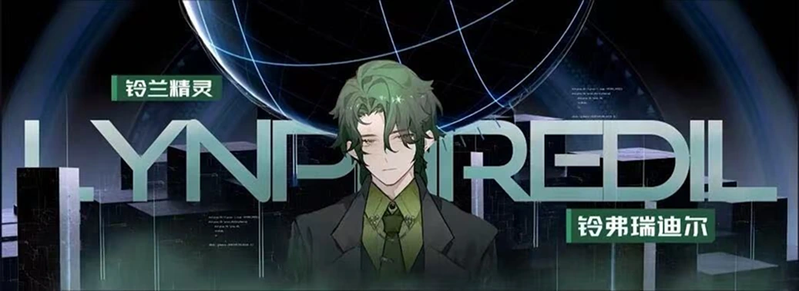
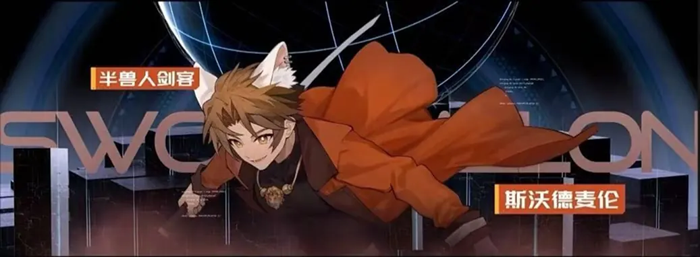
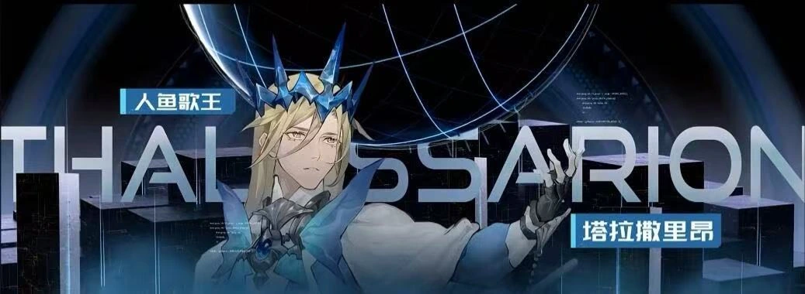

OC 宇宙 · 原创角色宇宙
银河系旅行攻略
ORIGINAL CHARACTERS · TIMELINE
这是什么
「银河系旅行攻略」是蒲熠星 2025–2026 巡回演唱会的主题。他亲手构建了一个星际猎手世界观，创造了 7 位原创角色（OC），并以他们的口吻写下一连串故事、诗与日常碎片——有的发在微博长文，有的以短打/微型诗形式连载。
他本人说："我是蒲熠星，我的演唱会上有八个人，七个是我创造的 OC，一个是我自己。" 这些文字既是歌词与舞台的注脚，也是独立的文学作品。
小说家

📖
蒲熠星
小说家 · 创作者中国内地歌手、演员、主持人，《银河系旅行攻略》个人巡演的创作者，也是这套星际猎手 OC 宇宙的"造物主"。故事里他以"小说家"的视角出现——所有角色的故事，都从他的笔下发端。
📖 叙事者 · 本宇宙作者
宇宙 · 角色
🏹
烬行
JINXING
星际猎手队长，银河系第一狙击手，使用弓箭。银河系中心酒吧老板兼调酒师。
⚙️ 赛博恩的哥哥 · 度漪的老板
度漪
DU YI
活了三百年的古人类歌者，银河系中心酒吧 001 号管家。对故土地球有深重执念。
🏹 酒吧员工 · 🧜 塔拉撒里昂的宿敌
⚙️
赛博恩
CYBORN
义体人，银河系第一黑客。烬行失联多年的弟弟，行踪成谜。
🏹 烬行的弟弟 · 🗡️ 谶口中的"爸爸"
🗡️
谶
CHAIN
稀有液态金属剑灵，红发。苏醒后认铃兰为"妈妈"、赛博恩为"爸爸"，拜度漪为师学"当大侠"。
度漪的徒弟 · 💚 被铃兰救治
💚
铃兰
LYNPHREDIL
精灵族治疗师（铃弗瑞迪尔），脾气古怪，救人全看心情。与"猎人"有远古羁绊。
🐱 救治过斯沃德 · 🗡️ 谶口中的"妈妈"
🐱
斯沃德·麦伦
SWORD MELON
半兽人剑客，赤诚呆萌。心脏经铃兰救治后长出了铃兰孢子。会变身猫崽。
💚 被铃兰救治 · 酒吧团宠
🧜
塔拉撒里昂
THALASSARION
人鱼歌王，人鱼反抗组织领袖。全宇宙公认最会唱歌，度漪唯一认可的对手。
度漪的宿敌 · 🗡️ 与谶有对话
日常